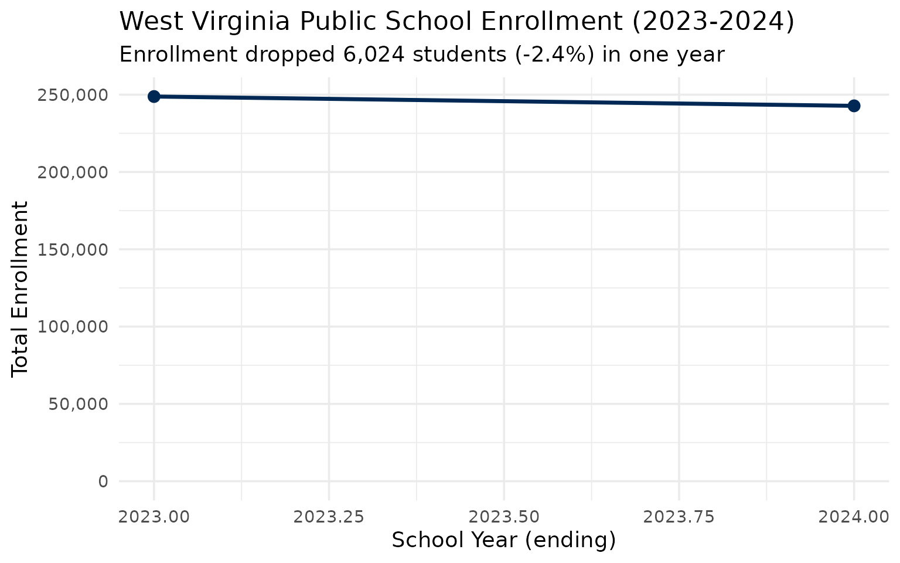
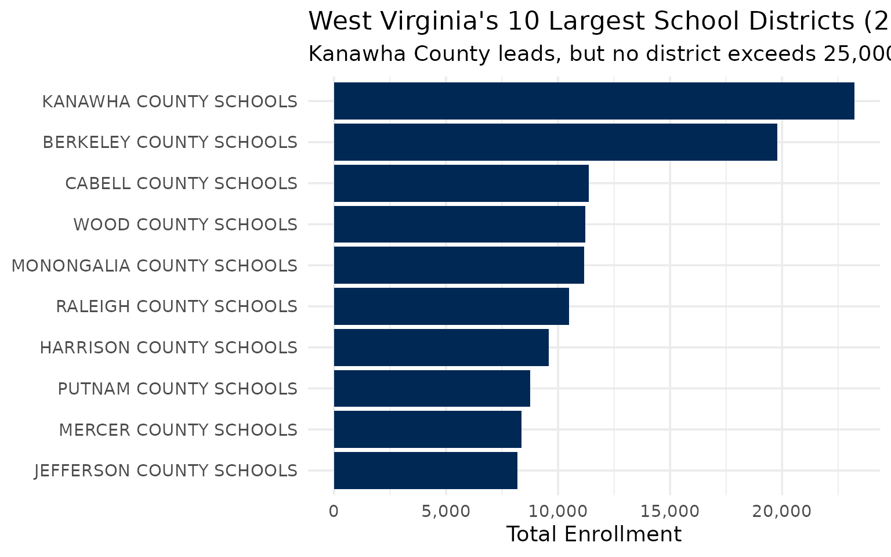
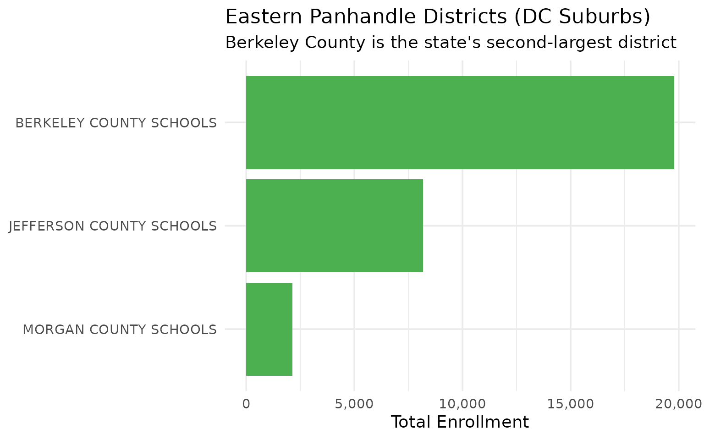
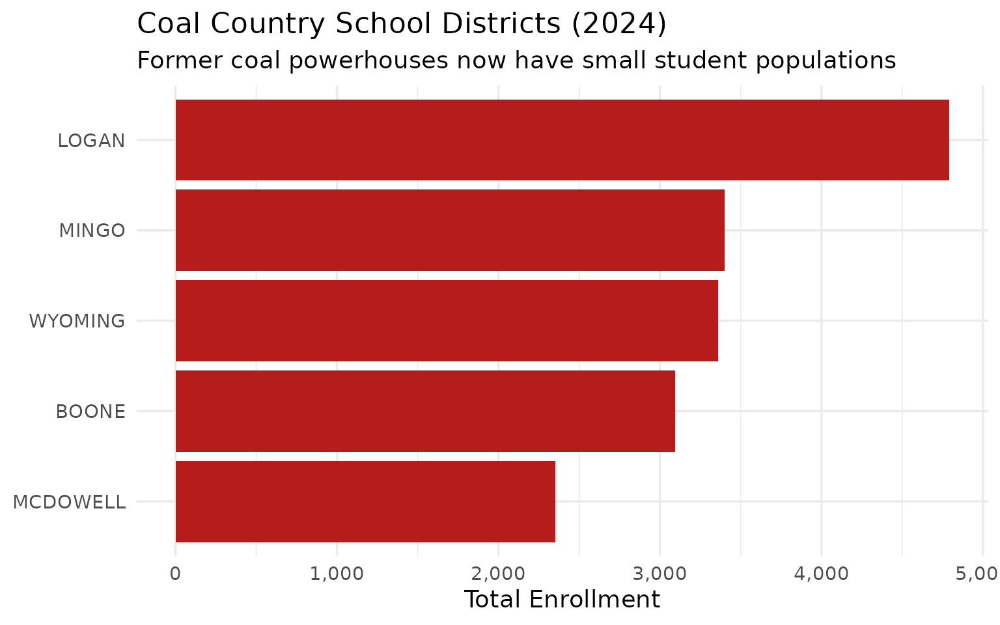
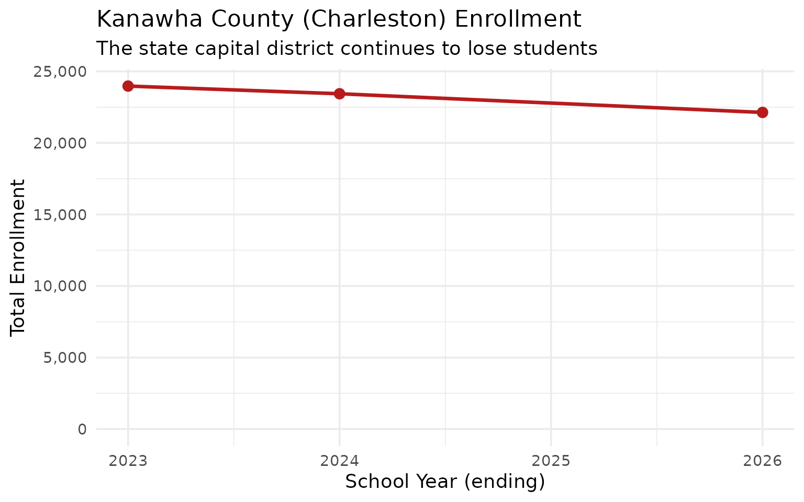
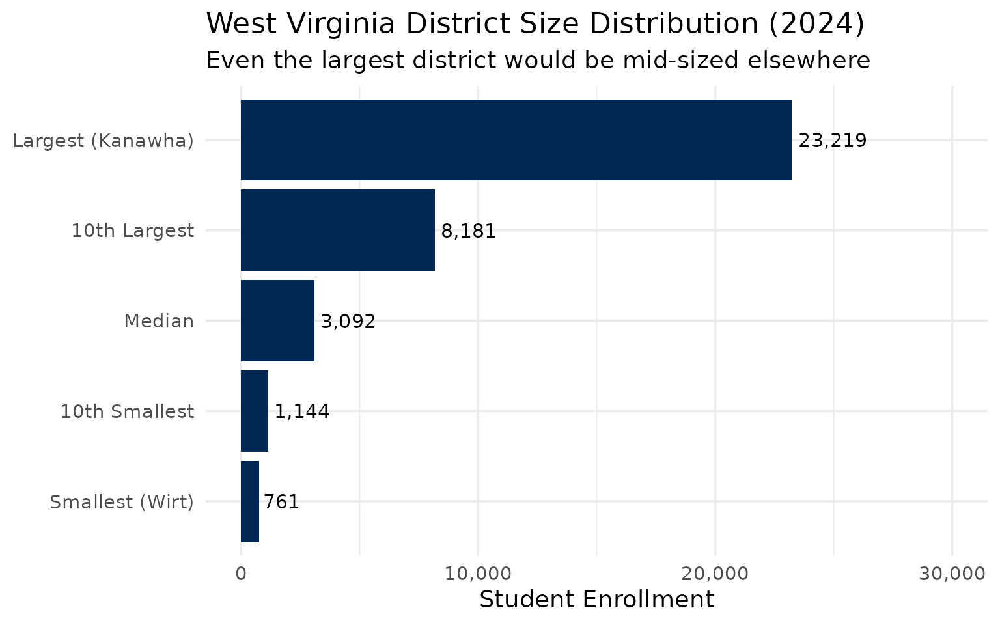
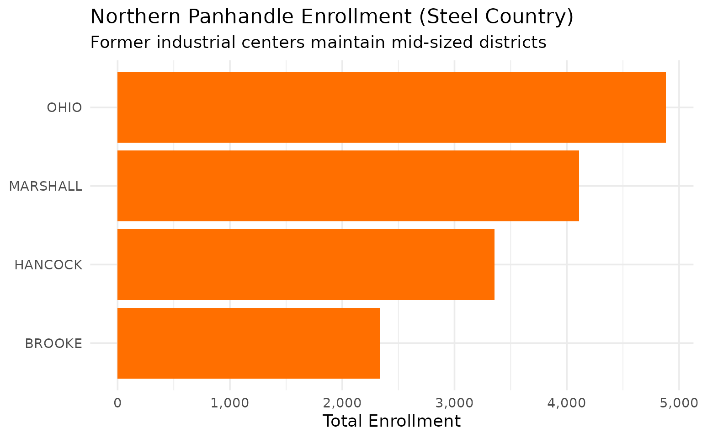
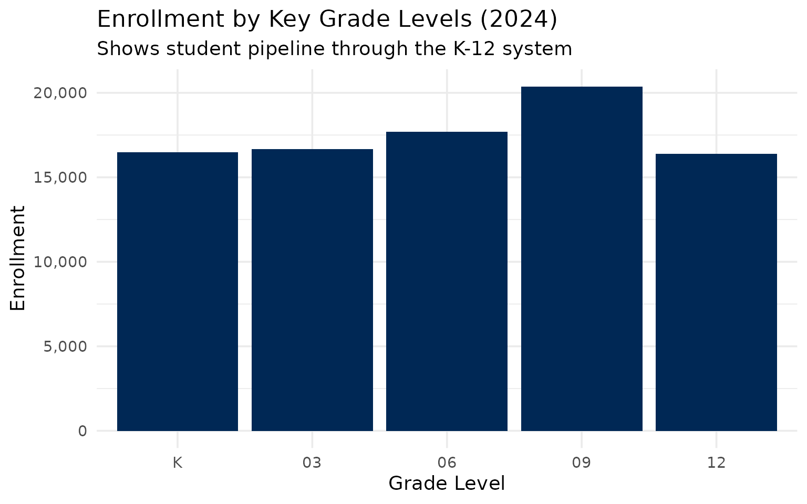
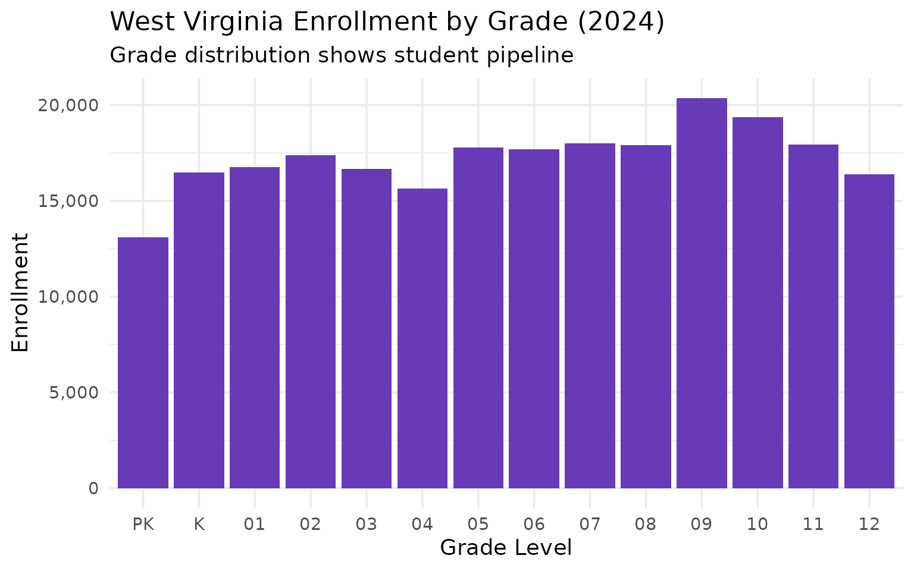

15 Insights from West Virginia School Enrollment Data
Source:vignettes/enrollment_hooks.Rmd
enrollment_hooks.Rmd
library(wvschooldata)
library(dplyr)
library(tidyr)
library(ggplot2)
theme_set(theme_minimal(base_size = 14))This vignette explores West Virginia’s public school enrollment data, surfacing key trends across the Mountain State’s 55 county school districts.
1. West Virginia educates around 250,000 students
West Virginia’s public schools serve roughly a quarter million students across 55 county-based school districts – one of the simplest administrative structures in the nation.
# Get available years (2023-2024)
available_years <- get_available_years()
enr <- fetch_enr_multi(available_years, use_cache = TRUE)
state_totals <- enr |>
filter(is_state, subgroup == "total_enrollment", grade_level == "TOTAL") |>
select(end_year, n_students) |>
mutate(change = n_students - lag(n_students),
pct_change = round(change / lag(n_students) * 100, 2))
state_totals
#> end_year n_students change pct_change
#> 1 2023 248801 NA NA
#> 2 2024 242777 -6024 -2.42
ggplot(state_totals, aes(x = end_year, y = n_students)) +
geom_line(linewidth = 1.2, color = "#002855") +
geom_point(size = 3, color = "#002855") +
scale_y_continuous(labels = scales::comma,
limits = c(0, NA)) +
labs(
title = "West Virginia Public School Enrollment (2023-2024)",
subtitle = "The Mountain State continues to see enrollment decline",
x = "School Year (ending)",
y = "Total Enrollment"
)
2. Kanawha County is the largest district
Kanawha County, home to the state capital Charleston, is West Virginia’s largest school district – though even it would be considered mid-sized in many states.
enr_2024 <- fetch_enr(2024, use_cache = TRUE)
top_10 <- enr_2024 |>
filter(is_district, subgroup == "total_enrollment", grade_level == "TOTAL") |>
arrange(desc(n_students)) |>
head(10) |>
select(district_name, county, n_students)
top_10
#> district_name county n_students
#> 1 KANAWHA COUNTY SCHOOLS KANAWHA 23437
#> 2 BERKELEY COUNTY SCHOOLS BERKELEY 19871
#> 3 CABELL COUNTY SCHOOLS CABELL 11436
#> 4 WOOD COUNTY SCHOOLS WOOD 11330
#> 5 MONONGALIA COUNTY SCHOOLS MONONGALIA 11201
#> 6 RALEIGH COUNTY SCHOOLS RALEIGH 10537
#> 7 HARRISON COUNTY SCHOOLS HARRISON 9635
#> 8 PUTNAM COUNTY SCHOOLS PUTNAM 8806
#> 9 MERCER COUNTY SCHOOLS MERCER 8415
#> 10 JEFFERSON COUNTY SCHOOLS JEFFERSON 8239
top_10 |>
mutate(district_name = forcats::fct_reorder(district_name, n_students)) |>
ggplot(aes(x = n_students, y = district_name)) +
geom_col(fill = "#002855") +
scale_x_continuous(labels = scales::comma) +
labs(
title = "West Virginia's 10 Largest School Districts (2024)",
subtitle = "Kanawha County leads, but no district exceeds 25,000 students",
x = "Total Enrollment",
y = NULL
)
3. Small counties dominate the landscape
West Virginia’s county-based system means many very small districts. Several counties have fewer than 1,000 students total.
# Analyze district size distribution
size_distribution <- enr_2024 |>
filter(is_district, subgroup == "total_enrollment", grade_level == "TOTAL") |>
mutate(size_category = case_when(
n_students < 1000 ~ "Under 1,000",
n_students < 2500 ~ "1,000-2,499",
n_students < 5000 ~ "2,500-4,999",
n_students < 10000 ~ "5,000-9,999",
TRUE ~ "10,000+"
)) |>
mutate(size_category = factor(size_category,
levels = c("Under 1,000", "1,000-2,499",
"2,500-4,999", "5,000-9,999", "10,000+"))) |>
group_by(size_category) |>
summarize(
n_districts = n(),
total_students = sum(n_students, na.rm = TRUE),
.groups = "drop"
)
size_distribution
#> # A tibble: 5 x 3
#> size_category n_districts total_students
#> <fct> <int> <dbl>
#> 1 Under 1,000 6 5195
#> 2 1,000-2,499 19 32739
#> 3 2,500-4,999 17 63209
#> 4 5,000-9,999 7 53822
#> 5 10,000+ 6 87812
size_distribution |>
ggplot(aes(x = size_category, y = n_districts, fill = size_category)) +
geom_col(show.legend = FALSE) +
geom_text(aes(label = n_districts), vjust = -0.5) +
scale_fill_brewer(palette = "Blues") +
labs(
title = "West Virginia Districts by Size (2024)",
subtitle = "Most counties have small student populations",
x = "District Size (students)",
y = "Number of Districts"
)
4. The Eastern Panhandle has the largest suburban districts
The Eastern Panhandle – Berkeley, Jefferson, and Morgan counties near Washington, D.C. – benefits from suburban spillover and has some of the state’s fastest-growing areas.
# Eastern Panhandle counties (DC suburbs)
panhandle <- c("BERKELEY", "JEFFERSON", "MORGAN")
regional_comparison <- enr_2024 |>
filter(is_district, subgroup == "total_enrollment", grade_level == "TOTAL") |>
mutate(region = case_when(
county %in% panhandle ~ "Eastern Panhandle",
TRUE ~ "Rest of State"
)) |>
group_by(region) |>
summarize(
n_districts = n(),
total_students = sum(n_students, na.rm = TRUE),
avg_district_size = round(mean(n_students), 0),
.groups = "drop"
)
regional_comparison
#> # A tibble: 2 x 4
#> region n_districts total_students avg_district_size
#> <chr> <int> <dbl> <dbl>
#> 1 Eastern Panhandle 3 30254 10085
#> 2 Rest of State 52 212523 4087
panhandle_districts <- enr_2024 |>
filter(is_district, county %in% panhandle,
subgroup == "total_enrollment", grade_level == "TOTAL") |>
select(district_name, county, n_students)
panhandle_districts |>
mutate(district_name = forcats::fct_reorder(district_name, n_students)) |>
ggplot(aes(x = n_students, y = district_name)) +
geom_col(fill = "#4CAF50") +
scale_x_continuous(labels = scales::comma) +
labs(
title = "Eastern Panhandle Districts (DC Suburbs)",
subtitle = "Berkeley County is the state's second-largest district",
x = "Total Enrollment",
y = NULL
)
5. Coal country has the smallest districts
The southern coalfield counties – McDowell, Wyoming, Mingo, Logan, and Boone – have experienced decades of population loss as the coal industry contracted.
# Coal counties
coal_counties <- c("MCDOWELL", "WYOMING", "MINGO", "LOGAN", "BOONE")
coal_districts <- enr_2024 |>
filter(is_district, county %in% coal_counties,
subgroup == "total_enrollment", grade_level == "TOTAL") |>
select(district_name, county, n_students) |>
arrange(n_students)
coal_districts
#> district_name county n_students
#> 1 MCDOWELL COUNTY SCHOOLS MCDOWELL 2353
#> 2 BOONE COUNTY SCHOOLS BOONE 3100
#> 3 WYOMING COUNTY SCHOOLS WYOMING 3366
#> 4 MINGO COUNTY SCHOOLS MINGO 3404
#> 5 LOGAN COUNTY SCHOOLS LOGAN 4804
coal_districts |>
mutate(county = forcats::fct_reorder(county, n_students)) |>
ggplot(aes(x = n_students, y = county)) +
geom_col(fill = "#B71C1C") +
scale_x_continuous(labels = scales::comma) +
labs(
title = "Coal Country School Districts (2024)",
subtitle = "Former coal powerhouses now have small student populations",
x = "Total Enrollment",
y = NULL
)
6. McDowell County exemplifies Appalachian decline
McDowell County, once a coal mining powerhouse with over 100,000 residents in 1950, now has fewer than 2,500 students – one of the starkest examples of Appalachian population decline.
mcdowell <- enr |>
filter(is_district, county == "MCDOWELL",
subgroup == "total_enrollment", grade_level == "TOTAL") |>
select(end_year, n_students)
mcdowell
#> end_year n_students
#> 1 2023 2455
#> 2 2024 23537. High school enrollment patterns
Analyzing enrollment by grade level reveals the pipeline of students moving through the system.
grade_trends <- enr_2024 |>
filter(is_state, subgroup == "total_enrollment",
grade_level %in% c("K", "05", "09", "12")) |>
select(grade_level, n_students)
grade_trends
#> grade_level n_students
#> 1 K 16473.84
#> 2 05 17791.03
#> 3 09 20379.53
#> 4 12 16400.898. Berkeley County is the fastest-growing region
Berkeley County in the Eastern Panhandle is West Virginia’s second-largest district and one of its few growing areas.
# Compare Berkeley to state average
berkeley <- enr_2024 |>
filter(is_district, county == "BERKELEY",
subgroup == "total_enrollment", grade_level == "TOTAL") |>
select(district_name, n_students)
state_avg <- enr_2024 |>
filter(is_district, subgroup == "total_enrollment", grade_level == "TOTAL") |>
summarize(avg_enrollment = mean(n_students, na.rm = TRUE))
cat("Berkeley County enrollment:", berkeley$n_students, "\n")
#> Berkeley County enrollment: 19871
cat("State average district enrollment:", round(state_avg$avg_enrollment, 0), "\n")
#> State average district enrollment: 4414
cat("Berkeley is", round(berkeley$n_students / state_avg$avg_enrollment, 1), "x the state average\n")
#> Berkeley is 4.5 x the state average9. Kindergarten enrollment signals future trends
Kindergarten enrollment serves as a leading indicator. Current K enrollment suggests what high school classes will look like in 12 years.
k_enrollment <- enr_2024 |>
filter(is_state, subgroup == "total_enrollment", grade_level == "K") |>
pull(n_students)
grade12_enrollment <- enr_2024 |>
filter(is_state, subgroup == "total_enrollment", grade_level == "12") |>
pull(n_students)
cat("Current Kindergarten enrollment:", format(k_enrollment, big.mark = ","), "\n")
#> Current Kindergarten enrollment: 16,473.84
cat("Current 12th grade enrollment:", format(grade12_enrollment, big.mark = ","), "\n")
#> Current 12th grade enrollment: 16,400.89
cat("K is", round((k_enrollment/grade12_enrollment - 1) * 100, 1), "% different from 12th grade\n")
#> K is 0.4 % different from 12th grade10. 55 districts create administrative structure
West Virginia’s county-based system means even tiny counties maintain full district operations. Several counties have student populations smaller than individual schools in other states.
smallest <- enr_2024 |>
filter(is_district, subgroup == "total_enrollment", grade_level == "TOTAL") |>
arrange(n_students) |>
head(10) |>
select(district_name, county, n_students)
smallest
#> district_name county n_students
#> 1 GILMER COUNTY SCHOOLS GILMER 761
#> 2 CALHOUN COUNTY SCHOOLS CALHOUN 829
#> 3 PENDLETON COUNTY SCHOOLS PENDLETON 846
#> 4 WIRT COUNTY SCHOOLS WIRT 899
#> 5 POCAHONTAS COUNTY SCHOOLS POCAHONTAS 918
#> 6 TUCKER COUNTY SCHOOLS TUCKER 942
#> 7 PLEASANTS COUNTY SCHOOLS PLEASANTS 1051
#> 8 WEBSTER COUNTY SCHOOLS WEBSTER 1116
#> 9 DODDRIDGE COUNTY SCHOOLS DODDRIDGE 1156
#> 10 RITCHIE COUNTY SCHOOLS RITCHIE 1157Counties like Wirt, Calhoun, and Pocahontas each maintain a full school district despite having fewer students than many individual elementary schools elsewhere.
11. Kanawha County (Charleston) is the state capital’s district
The state capital Charleston, in Kanawha County, is West Virginia’s largest school district with over 23,000 students.
kanawha <- enr |>
filter(is_district, county == "KANAWHA",
subgroup == "total_enrollment", grade_level == "TOTAL") |>
select(end_year, n_students)
kanawha
#> end_year n_students
#> 1 2023 23974
#> 2 2024 23437
ggplot(kanawha, aes(x = end_year, y = n_students)) +
geom_line(linewidth = 1.2, color = "#B71C1C") +
geom_point(size = 3, color = "#B71C1C") +
scale_y_continuous(labels = scales::comma, limits = c(0, NA)) +
labs(
title = "Kanawha County (Charleston) Enrollment",
subtitle = "The state capital district continues to lose students",
x = "School Year (ending)",
y = "Total Enrollment"
)
12. The urban-rural divide is minimal
West Virginia has no large cities. Even “urban” Kanawha County is mostly rural by national standards. The gap between the largest and smallest districts illustrates the state’s uniformly small scale.
district_sizes <- enr_2024 |>
filter(is_district, subgroup == "total_enrollment", grade_level == "TOTAL") |>
arrange(desc(n_students)) |>
mutate(rank = row_number()) |>
select(rank, district_name, county, n_students)
size_range <- tibble(
metric = c("Largest (Kanawha)", "10th Largest", "Median", "10th Smallest", "Smallest (Wirt)"),
n_students = c(
district_sizes$n_students[1],
district_sizes$n_students[10],
median(district_sizes$n_students),
district_sizes$n_students[46],
district_sizes$n_students[55]
)
)
size_range
#> # A tibble: 5 x 2
#> metric n_students
#> <chr> <dbl>
#> 1 Largest (Kanawha) 23437
#> 2 10th Largest 8239
#> 3 Median 3100
#> 4 10th Smallest 1157
#> 5 Smallest (Wirt) 761
size_range |>
mutate(metric = factor(metric, levels = rev(metric))) |>
ggplot(aes(x = n_students, y = metric)) +
geom_col(fill = "#002855") +
geom_text(aes(label = scales::comma(n_students)), hjust = -0.1, size = 4) +
scale_x_continuous(labels = scales::comma, limits = c(0, 30000)) +
labs(
title = "West Virginia District Size Distribution (2024)",
subtitle = "Even the largest district would be mid-sized elsewhere",
x = "Student Enrollment",
y = NULL
)
13. The Northern Panhandle steel town legacy
The Northern Panhandle – Ohio, Marshall, Brooke, and Hancock counties – once thrived on steel and manufacturing. These communities now have small to mid-sized districts.
northern_panhandle <- c("OHIO", "MARSHALL", "BROOKE", "HANCOCK")
northern_districts <- enr_2024 |>
filter(is_district, county %in% northern_panhandle,
subgroup == "total_enrollment", grade_level == "TOTAL") |>
select(district_name, county, n_students) |>
arrange(desc(n_students))
northern_districts
#> district_name county n_students
#> 1 OHIO COUNTY SCHOOLS OHIO 4903
#> 2 MARSHALL COUNTY SCHOOLS MARSHALL 4124
#> 3 HANCOCK COUNTY SCHOOLS HANCOCK 3374
#> 4 BROOKE COUNTY SCHOOLS BROOKE 2336
northern_districts |>
mutate(county = forcats::fct_reorder(county, n_students)) |>
ggplot(aes(x = n_students, y = county)) +
geom_col(fill = "#FF6F00") +
scale_x_continuous(labels = scales::comma) +
labs(
title = "Northern Panhandle Enrollment (Steel Country)",
subtitle = "Former industrial centers maintain mid-sized districts",
x = "Total Enrollment",
y = NULL
)
14. Grade-level enrollment by benchmark grades
Comparing enrollment across key grade levels (K, 3, 6, 9, 12) shows the flow of students through the system.
grade_comparison <- enr_2024 |>
filter(is_state, subgroup == "total_enrollment",
grade_level %in% c("K", "03", "06", "09", "12")) |>
select(grade_level, n_students) |>
mutate(grade_level = factor(grade_level, levels = c("K", "03", "06", "09", "12")))
grade_comparison
#> grade_level n_students
#> 1 K 16473.84
#> 2 03 16683.61
#> 3 06 17685.46
#> 4 09 20379.53
#> 5 12 16400.89
ggplot(grade_comparison, aes(x = grade_level, y = n_students)) +
geom_col(fill = "#002855") +
scale_y_continuous(labels = scales::comma) +
labs(
title = "Enrollment by Key Grade Levels (2024)",
subtitle = "Shows student pipeline through the K-12 system",
x = "Grade Level",
y = "Enrollment"
)
15. The future is written in demographics
West Virginia’s birth rate has declined steadily, reflected in smaller kindergarten cohorts entering the system each year.
# Compare K to total to show pipeline
k_data <- enr_2024 |>
filter(is_state, subgroup == "total_enrollment", grade_level == "K") |>
select(n_students) |>
mutate(grade = "Kindergarten")
total_data <- enr_2024 |>
filter(is_state, subgroup == "total_enrollment", grade_level == "TOTAL") |>
select(n_students) |>
mutate(grade = "All Grades")
k_pct_of_total <- k_data$n_students / total_data$n_students * 100
cat("Kindergarten enrollment:", format(k_data$n_students, big.mark = ","), "\n")
#> Kindergarten enrollment: 16,473.84
cat("Total enrollment:", format(total_data$n_students, big.mark = ","), "\n")
#> Total enrollment: 242,777
cat("Kindergarten is", round(k_pct_of_total, 1), "% of total enrollment\n")
#> Kindergarten is 6.8 % of total enrollment
# Show all grade levels
all_grades <- enr_2024 |>
filter(is_state, subgroup == "total_enrollment",
grade_level %in% c("PK", "K", "01", "02", "03", "04", "05",
"06", "07", "08", "09", "10", "11", "12")) |>
select(grade_level, n_students) |>
mutate(grade_level = factor(grade_level,
levels = c("PK", "K", "01", "02", "03", "04", "05",
"06", "07", "08", "09", "10", "11", "12")))
ggplot(all_grades, aes(x = grade_level, y = n_students)) +
geom_col(fill = "#673AB7") +
scale_y_continuous(labels = scales::comma) +
labs(
title = "West Virginia Enrollment by Grade (2024)",
subtitle = "Grade distribution shows student pipeline",
x = "Grade Level",
y = "Enrollment"
)
Summary
West Virginia’s school enrollment data reveals: - Quarter million students: ~250,000 students across 55 county school districts - Uniform small scale: Even the largest district (Kanawha) has only ~23,000 students - Eastern Panhandle exception: DC suburb spillover creates growth areas - Coal country decline: Southern counties have the smallest enrollments - Simple structure: One district per county, mandated by the state constitution
These patterns reflect broader demographic and economic forces reshaping Appalachia.
Data sourced from West Virginia Department of Education (WVDE) School Finance Data.
Session Info
sessionInfo()
#> R version 4.5.2 (2025-10-31)
#> Platform: x86_64-pc-linux-gnu
#> Running under: Ubuntu 24.04.3 LTS
#>
#> Matrix products: default
#> BLAS: /usr/lib/x86_64-linux-gnu/openblas-pthread/libblas.so.3
#> LAPACK: /usr/lib/x86_64-linux-gnu/openblas-pthread/libopenblasp-r0.3.26.so; LAPACK version 3.12.0
#>
#> locale:
#> [1] LC_CTYPE=C.UTF-8 LC_NUMERIC=C LC_TIME=C.UTF-8
#> [4] LC_COLLATE=C.UTF-8 LC_MONETARY=C.UTF-8 LC_MESSAGES=C.UTF-8
#> [7] LC_PAPER=C.UTF-8 LC_NAME=C LC_ADDRESS=C
#> [10] LC_TELEPHONE=C LC_MEASUREMENT=C.UTF-8 LC_IDENTIFICATION=C
#>
#> time zone: UTC
#> tzcode source: system (glibc)
#>
#> attached base packages:
#> [1] stats graphics grDevices utils datasets methods base
#>
#> other attached packages:
#> [1] ggplot2_4.0.1 tidyr_1.3.2 dplyr_1.1.4 wvschooldata_0.2.0
#>
#> loaded via a namespace (and not attached):
#> [1] gtable_0.3.6 jsonlite_2.0.0 qpdf_1.4.1 compiler_4.5.2
#> [5] pdftools_3.6.0 Rcpp_1.1.1 tidyselect_1.2.1 jquerylib_0.1.4
#> [9] systemfonts_1.3.1 scales_1.4.0 textshaping_1.0.4 yaml_2.3.12
#> [13] fastmap_1.2.0 R6_2.6.1 labeling_0.4.3 generics_0.1.4
#> [17] curl_7.0.0 knitr_1.51 forcats_1.0.1 tibble_3.3.1
#> [21] desc_1.4.3 bslib_0.9.0 pillar_1.11.1 RColorBrewer_1.1-3
#> [25] rlang_1.1.7 utf8_1.2.6 cachem_1.1.0 xfun_0.56
#> [29] fs_1.6.6 sass_0.4.10 S7_0.2.1 cli_3.6.5
#> [33] withr_3.0.2 pkgdown_2.2.0 magrittr_2.0.4 digest_0.6.39
#> [37] grid_4.5.2 askpass_1.2.1 rappdirs_0.3.4 lifecycle_1.0.5
#> [41] vctrs_0.7.0 evaluate_1.0.5 glue_1.8.0 farver_2.1.2
#> [45] codetools_0.2-20 ragg_1.5.0 httr_1.4.7 rmarkdown_2.30
#> [49] purrr_1.2.1 tools_4.5.2 pkgconfig_2.0.3 htmltools_0.5.9